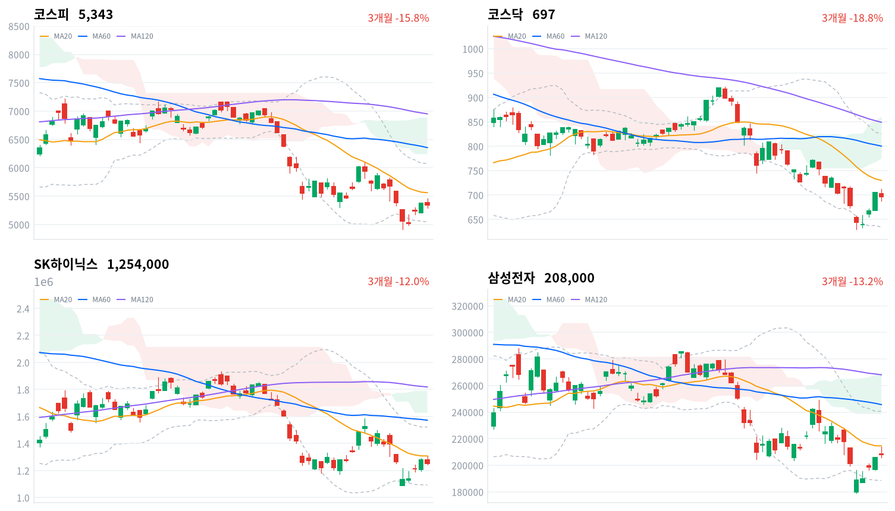

엔비디아 이사회가 젠슨 황 CEO 해임을 준비한다는 보도가 나오자 코스피는 오전 5,459까지 오른 뒤 오후에 하락으로 돌아섰다. 그래도 아시아 4개 지수 평균보다 0.70%포인트 덜 내렸고, 외국인은 3,674억원을 순매수해(당일 잠정) 3거래일째 샀다.
SK하이닉스는 1.80% 내리고 삼성전자는 0.97% 올라 메모리 대형주가 엇갈렸다. 엔비디아가 미국 정규장에서 어떻게 거래되는지를 본 뒤 11월 13일에도 외국인 순매수가 이어지는지를 기다린다.
엔비디아의 지배구조 사건이 한국 반등을 오후에 꺾었다. 엔비디아 이사회가 젠슨 황 CEO 해임을 준비하고 있다는 보도가 나왔고, 엔비디아 주가는 시간외 거래에서 9.20% 급락했다. 코스피는 오전 상승분을 모두 내줬지만, 외국인은 코스피를 3,674억원 순매수해(당일 잠정) 3거래일째 샀고 매도는 기관(6,772억원 순매도)에서 나왔다.
장 마감 뒤 보도는 하락을 엔비디아 해임설에 옵션만기일이 겹친 결과로, 지수 하락은 기관 매도가 이끈 것으로 설명했다. 그 설명에 동의한다. 키움증권 한지영 연구원은 전날 미국 AI주 랠리와 코어위브의 자금조달 신뢰 회복을 계기로 국내 증시도 악재보다 호재에 반응하기 시작했다고 진단했다. 이날 시장은 악재에 반응했지만 그 폭은 아시아 평균보다 작았다. 보도의 설명이 답하지 않는 것은 이 악재가 무엇을 바꿨느냐다. 해임 준비는 아직 확정되지 않은 엔비디아 경영진의 문제이고, AI 가속기 수요나 HBM 발주 계획이 바뀌었다는 자료는 나오지 않았다. 그런데도 같은 메모리 대형주 사이에서 SK하이닉스와 삼성전자의 하루 수익률이 2.77%포인트 벌어졌다.
2거래일 반등이 AI 하드웨어 악재에 다시 막혀 11월 5~9일 급락 뒤의 되돌림이 끝났다는 설명도 가능하다. 그러나 대만가권이 2.63% 내린 날 코스피는 0.61% 내리는 데 그쳤고 외국인 순매수가 3거래일째 이어져, 한국 고유의 매도 압력이 소진되고 있다는 판단을 유지한다. 두 메모리 대형주의 격차는 엔비디아 납품 비중이 큰 SK하이닉스에서 하루 위험을 줄인 결과로 본다. 엔비디아 경영 공백이 차세대 가속기 일정과 HBM 발주 협상을 늦출 수 있다는 판단을 시장이 먼저 반영했다면, 고객 다변화가 덜 된 SK하이닉스의 상대 재평가가 시작된 것이고 약세는 이어진다. 종목별 투자자 매매 자료가 없어 외국인이 무엇을 샀는지는 가리지 못한다. 두 설명은 11월 13일 외국인 순매수가 이어지는지와, 11월 19일까지 SK하이닉스가 삼성전자 대비 약세를 되찾는지로 구분된다.
새로 제안할 상품은 없다. 반도체·AI 하드웨어 테마는 이날 한국 반도체 업종이 코스피보다 약해 가격 흐름이 다시 꺾였지만, 약세를 부른 재료가 수요 자료가 아니라 확정되지 않은 경영진 보도여서 하루 움직임으로 테마 판단을 바꾸기는 이르다. 같은 날 전력기기 대형주는 올라, AI 악재가 데이터센터 투자 관련주 전체로 번지지는 않았다. 가장 가까운 결정적 일정은 엔비디아의 11월 12일 미국 정규장 거래를 본 뒤인 11월 13일 한국 정규장의 외국인 코스피 순매수 방향이다.
코스피가 11월 12일 기준 볼린저 밴드 하단 5,041 아래에서 마감하면, 한국 고유의 매도 압력이 소진되고 있고 이날 하락은 엔비디아 보도에 따른 하루 위험 회피였다는 오늘 판단을 철회한다. 그 경우 11월 5~9일 급락 뒤의 되돌림이 끝났다는 설명을 우선 설명으로 본다.
출처: 월스트리트저널(아시아경제 인용), 헤럴드경제
11월 11일 미국 세션에서 S&P500은 1.31%, 나스닥은 1.60%, 다우는 0.49% 올랐다. 그 상승은 아시아로 이어지지 않았다. 대만가권(-2.63%)이 가장 크게 내렸고 항셍(-1.26%)·닛케이(-0.70%)·상해종합(-0.67%)도 내렸다. 대만에는 엔비디아 보도에 시진핑 주석의 대만 통일 논의 재촉구가 겹쳤다는 보도가 나왔다. 코스피는 네 지수 평균(-1.31%)보다 0.70%포인트 덜 내렸다.
코스피는 전일 종가 5,375.36보다 조금 높은 5,385.94에서 출발했다. 한국 정규장 동안 S&P500 선물은 0.08%, 나스닥 선물은 0.16% 내리는 데 그쳤다. 엔비디아 시간외 급락이 몇 시에 나왔는지는 확인되지 않아, 선물의 작은 하락을 미국 시장이 충격을 작게 본 증거로 쓰기는 어렵다.
코스피는 오전 고점 5,458.84와 오후 저점 5,293.05 사이에서 움직이다 하루 범위의 아래쪽 3분의 1에서 마감했다. 코스닥도 고점 711.86에서 밀려 696.53으로 끝나 700선 아래로 내려왔다. 원화는 오후에 강해졌다가 마감 무렵 일부 되돌렸다.
오후 하락 전환의 재료로 엔비디아 해임 준비 보도가 꼽혔고, 옵션만기일이 장 막판 변동성을 키웠다는 해설이 나왔다. 엔비디아 공급망의 SK하이닉스와 삼성전기, 실적을 낸 NAVER와 DB하이텍이 크게 내렸고 삼성전자와 전력기기주는 올랐다. 코스피에서는 외국인이 사고 기관과 개인이 팔았으며, 코스닥에서는 외국인 매도가 700선 하회를 이끌었다는 보도가 나왔다. 장중 투자자별 흐름과 시간외 거래 자료는 없다.
출처: 아시아경제, 핀포인트뉴스, 더나은미래, 뉴스1, 이투데이
코스피는 0.61% 내린 5,342.73, 코스닥은 1.22% 내린 696.53으로 마감했다. 코스피는 3거래일 만에 내렸다. 코스피는 오전에 전환선(5,411)을 넘었지만 종가로는 지키지 못했고, 20일 이동평균(5,560)보다 3.9% 낮은 자리로 돌아왔다.
| 지수 | 종가 | 등락률 | 시가 | 고가 | 저가 | 전일 종가 |
|---|---|---|---|---|---|---|
| 코스피 | 5,342.73 | -0.61% | 5,385.94 | 5,458.84 | 5,293.05 | 5,375.36 |
| 코스닥 | 696.53 | -1.22% | 703.22 | 711.86 | 687.40 | 705.10 |
| 주체 | 순매수(억원) |
|---|---|
| 개인 | -2,132 |
| 외국인 | +3,674 |
| 기관 | -6,772 |
| 주체 | 순매수(억원) |
|---|---|
| 개인 | +3,133 |
| 외국인 | -3,563 |
| 기관 | +416 |
지수가 내린 날에도 외국인은 코스피를 샀다. 외국인은 3,674억원을 순매수해(전일 6,729억원 순매수, 당일 잠정) 3거래일째 샀고, 규모는 전일의 절반 남짓으로 줄었다. 기관은 6,772억원 순매도(전일 5,034억원 순매도)로 2거래일째 팔아 이날 가장 큰 매도 주체였고, 개인은 2,132억원을 순매도했다(전일 7,145억원 순매도). 외국인의 3거래일 순매수 합계 1조4,842억원은 그 앞 7거래일 순매도 12조5,489억원의 8분의 1 수준이라, 매도가 멈춘 것과 되사기 시작한 것은 아직 구분되지 않는다.
코스닥에서는 외국인이 3,563억원을 순매도해(전일 1,354억원 순매도) 6거래일째 팔았고 개인이 3,133억원을 샀다. 기관 순매수는 416억원(전일 3,130억원)으로 줄었다. 전일 값은 이날 다시 받은 잠정치라 지난 글의 값(코스피 외국인 6,569억원 순매수)과 다르다.
한국은행 집계로 10월 외국인 국내 주식투자자금은 193억1,000만달러 순유출돼 두 달 연속 빠졌고, 유출 폭은 9월보다 36.4% 커졌다. AI 투자 수익성 우려와 미국 중간선거 뒤 데이터센터 규제 강화 관측이 원인으로 꼽혔다. 이번 3거래일 순매수는 11월 들어 처음 나온 연속 순매수다.
장중 누적 수급과 프로그램 매매는 받을 수 있는 자료가 없어 싣지 않는다.
출처: 이데일리
| 순위 | 종목/ETF | 구분 | 거래대금 | 비고 |
|---|---|---|---|---|
| 1 | SK하이닉스 | 개별주 | 5.18조원 | - |
| 2 | 삼성전자 | 개별주 | 4.00조원 | - |
| 3 | 반도체 테마 ETF | 테마·롱 | 1.99조원 | 29종 합산 |
| 4 | 삼성전기 | 개별주 | 0.83조원 | - |
| 5 | 삼성전자우 | 개별주 | 0.79조원 | - |
| 6 | SK스퀘어 | 개별주 | 0.68조원 | - |
| 7 | KODEX CD금리액티브(합성) | 단기금리·현금성 | 0.48조원 | - |
| 8 | 삼성SDI | 개별주 | 0.33조원 | - |
| 9 | NAVER | 개별주 | 0.30조원 | - |
| 10 | 대덕전자 | 개별주 | 0.25조원 | - |
단위 백만원 원본을 조 단위로 환산했다. 같은 기초자산 ETF는 방향별로, 같은 테마 섹터 ETF는 테마별로 묶고 지수·해외 ETF는 제외했다.
하락한 SK하이닉스에 거래가 가장 많이 몰렸다. SK하이닉스(5.18조원)와 삼성전자(4.00조원)가 상위 10개 합계의 62%를 차지했고, 반도체 테마 ETF 29종 합산(1.99조원)이 3위였다. 같은 반도체 거래 속에서 SK하이닉스 주가는 내리고 삼성전자 주가는 올라, 거래대금만으로는 반도체에 돈이 들어왔는지 나갔는지 말할 수 없다. 엔비디아 공급망의 삼성전기(0.83조원)도 4위였다.
반도체 약세는 대형주에 그치지 않고 업종 안으로 넓게 퍼졌다. 반도체와반도체장비 업종(-0.89%)은 174종목 가운데 47종목만 올라 하락 종목이 다수였다. 대표 ETF 기준 12개 섹터 가운데 오른 것은 조선(+0.71%)과 은행(+0.38%) 둘뿐이고, 소프트웨어(-2.96%)가 가장 약했다. 1주 기준으로는 반도체(+6.71%)가 여전히 가장 강하다.
소프트웨어는 ETF와 업종이 반대로 움직였다. ETF 기준 소프트웨어는 2.96% 내렸지만 업종 분류의 소프트웨어는 1.55% 올라 76종목 가운데 32종목이 올랐다. 담은 종목이 달라 NAVER 급락이 ETF 쪽 낙폭을 키웠을 가능성이 있다. 전기장비(+0.80%)는 35종목 가운데 11종목만 올라 전력기기 대형주 몇 종목이 끈 좁은 상승이었고, 방송과엔터테인먼트(+5.08%)는 58종목 가운데 29종목이 오른 폭넓은 상승이었다.
SK하이닉스가 1.80% 내렸다. 엔비디아 CEO 해임 준비 보도로 엔비디아가 시간외 거래에서 급락하자 반도체주가 흔들렸다는 보도가 나왔다. DB하이텍은 16.36% 급락했다. 3분기 영업이익이 시장 예상(1,107억원)을 약 18.7% 밑돌았다는 보도가 이유로 꼽혔지만, 직접 인과는 확인되지 않았다는 보도도 있어 해석이 엇갈린다.
삼성전자는 0.97%, 삼성전자우는 2.00% 올랐다. 보도는 삼성전자가 오름세를 지켰다고만 전했고 확인된 재료는 없다. 아산 첨단 패키징 팹 투자 발표는 장 마감 뒤에 나와 이날 주가의 이유가 될 수 없다.
삼성전기는 4.01% 내렸다. 회사 고유의 악재나 원인 발표는 확인되지 않았고, 엔비디아 공급망 전반의 위험 회피와 같은 날이었다는 시간 일치만 있다.
NAVER는 6.43% 급락했다. 3분기 매출은 3조4,724억원으로 10.7% 늘어 분기 최대였지만 영업이익이 4,513억원으로 20.9% 줄었고, AI 투자 부담이 이유로 보도됐다.
삼성화재는 7.24% 내렸고, 메리츠금융지주도 13.05% 급락했다. 두 회사 모두 3분기 실적 부진이 이유로 보도됐지만 독립 확인은 없다.
묶음 밖에서는 한진칼우(+29.93%)·하이브(+5.35%)·코스맥스(+5.32%)가 올랐고, NC(-9.19%)와 한미약품(-7.07%)은 크게 내렸지만 확인된 재료는 없다. 전력기기 대형주 HD현대일렉트릭(+3.95%)·효성중공업(+2.45%)·LS ELECTRIC(+2.13%)은 함께 올랐다.
출처: 아시아경제, 시사저널e, 한국경제, 아주경제, 재경일보, 인사이트코리아, 굿모닝경제
채권시장은 엔비디아 보도에 거의 반응하지 않았다. 국고채 3년물은 3.729%로 그대로였고 10년물은 1.3bp 내린 3.937%로 마감했다.
| 지표 | 금리 | 전일比(bp) | 기준일 |
|---|---|---|---|
| 국고채 3년 | 3.729% | 0.0 | 2026-11-12 |
| 국고채 10년 | 3.937% | -1.3 | 2026-11-12 |
| CD 91일 | 3.37% | 0.0 | 2026-11-12 |
| 회사채 AA- 3년 | 4.407% | -0.3 | 2026-11-12 |
| 한국은행 기준금리 | 3.00% | 0.0 | 2026년 10월 기준 |
10년물만 조금 내려 10년물과 3년물의 금리차는 20.8bp로 1.3bp 좁아졌고, 최근 2년(533거래일) 가운데 좁은 쪽 18% 안에 있다. 전날 미국 물가 충격으로 크게 오른 금리가 하루 쉬어 간 것이고, 주식시장의 AI 악재가 장기 성장 기대를 낮추는 쪽으로 채권에 번졌다고 볼 만한 움직임은 아니다.
회사채 AA- 3년물은 4.407%로 0.3bp 내려, 국고채 3년물 대비 금리차가 67.8bp로 0.3bp 좁혀졌다. 이 금리차는 최근 2년(533거래일) 가운데 넓은 쪽 16% 안에 있어 기업이 돈을 빌리는 비용은 여전히 높은 수준이다.
| 미국 참조 지수 | 구분 | 관측 | 등락률 | 업종 내 상승 비율 | 기준일 |
|---|---|---|---|---|---|
| 반도체·AI 하드웨어 | 업종 | 반도체와반도체장비 | -0.89% | 27% | 11/12 |
| 반도체·AI 하드웨어 | 종목 | SK하이닉스 | -1.80% | – | 11/12 |
| 반도체·AI 하드웨어 | 종목 | 삼성전자 | +0.97% | – | 11/12 |
| 반도체·AI 하드웨어 | 지수 | 대만가권 | -2.63% | – | 11/12 |
| 전력망 | 업종 | 전기장비 | +0.80% | 31% | 11/12 |
| 전력망 | 종목 | HD현대일렉트릭 | +3.95% | – | 11/12 |
| 전력망 | 종목 | LS ELECTRIC | +2.13% | – | 11/12 |
| 전력망 | 종목 | 효성중공업 | +2.45% | – | 11/12 |
| 방산 | 업종 | 우주항공과국방 | -1.58% | 26% | 11/12 |
| 방산 | 종목 | 한화에어로스페이스 | -0.76% | – | 11/12 |
| 방산 | 종목 | LIG디펜스앤에어로스페이스 | -2.02% | – | 11/12 |
| 산업재 | 업종 | 기계 | -2.00% | 20% | 11/12 |
| 산업재 | 업종 | 조선 | +0.46% | 32% | 11/12 |
| 산업재 | 종목 | HD현대중공업 | +1.90% | – | 11/12 |
| 산업재 | 종목 | 삼성중공업 | +0.42% | – | 11/12 |
| 금속·광업 | 업종 | 철강 | -0.96% | 18% | 11/12 |
| 금속·광업 | 종목 | POSCO홀딩스 | -0.54% | – | 11/12 |
| 금융 | 업종 | 은행 | -0.62% | 9% | 11/12 |
| 금융 | 종목 | KB금융 | -0.98% | – | 11/12 |
| 금융 | 종목 | 신한지주 | -0.82% | – | 11/12 |
| 소프트웨어 | 업종 | 소프트웨어 | +1.55% | 42% | 11/12 |
| 소프트웨어 | 종목 | NAVER | -6.43% | – | 11/12 |
| 소프트웨어 | 종목 | 카카오 | -0.94% | – | 11/12 |
| 에너지 | 업종 | 석유와가스 | -0.34% | 32% | 11/12 |
| 일본 | 지수 | 닛케이 | -0.70% | – | 11/12 |
| 중국 | 지수 | 항셍 | -1.26% | – | 11/12 |
| 중국 | 지수 | 상해종합 | -0.67% | – | 11/12 |
엔비디아 보도로 주식이 밀린 오후에도 원화는 약해지지 않았다. 원/달러는 한국장 시간대 10시 고점 1,336.98원에서 14시 저점 1,326.91원까지 내려갔다가 마지막 관측 1,332.33원(15:30)으로 끝나, 하루 범위가 10원 남짓에 그쳤다. 해외주식 펀드의 대기 자금이 달러를 사는 비용은 위험 회피가 나온 오후에 오히려 낮아졌다.
전력망 테마는 AI 하드웨어 악재가 나온 날에도 한국에서 올랐다. HD현대일렉트릭이 3.95%, 효성중공업이 2.45%, LS ELECTRIC이 2.13% 올라, 가격만 보면 한국 시장은 엔비디아 경영진 보도를 데이터센터 전력 설비 수요의 문제로 받아들이지 않았다. 반도체는 대만가권이 2.63% 내려 한국보다 크게 약했다. 둘 다 아시아가 엔비디아 보도와 전날 미국장에 반응한 것일 수 있어, 미국 정규장에서도 전력기기주가 반도체주의 약세와 따로 움직이는지가 이 반응이 아시아만의 것인지를 보여 준다.
이재명 대통령이 12일 삼성전자 온양캠퍼스에서 열린 충청권 메가프로젝트 착공식에서 6조원 규모 첨단 패키징 팹 신설과 112개 기업의 23조6,000억원 추가 투자를 밝혔다는 보도가 나왔다. 충남과 아산시는 인허가 기간을 3분의 1로 줄였다. 일부 기사 제목의 「40조」는 첨단 장비 투자를 가리켜 범위가 다르다.
팹이 지어지면 반도체 후공정 장비·소재 업체의 수주가 늘고, 충청권 건설 발주도 따라온다. 착공식은 장 마감 뒤라 이날 가격에는 담기지 않았다. 다음 분기점은 삼성전자의 패키징 팹 장비 발주 공시와 지자체 인허가 진행이며 일정은 미확정이다.
공정위의 1조6,266억원 과징금 뒤, 재정경제부가 딜러들의 인수 여력이 약해져 국고채 발행이 차질을 빚고 낙찰금리가 오를 수 있다는 우려를 공정위에 전달하고 정보 공유 가이드라인 마련에 착수했다는 보도가 나왔다. 이날 국고채 금리가 거의 움직이지 않아 발행 시장 충격은 아직 나타나지 않았지만, 금리 안정만으로 영향이 없다고 판단하기는 이르다. 다음 국고채 입찰의 낙찰금리와 행정소송 제기 여부가 분기점이며 날짜는 확인되지 않았다.
TPG가 롯데그룹이 가진 롯데렌탈 지분 61.17%를 인수한 뒤 대주주와 같은 주당 5만9,000원에 남은 38.83%를 공개매수하고 있고(11월 6일~12월 3일), 발의된 의무공개매수 법안대로라면 결과가 달라질 수 있다는 해설이 나왔다. 법안이 통과되면 사모펀드가 경영권을 살 때 소액주주 지분까지 같은 값에 사야 해 인수 비용이 늘고, 지배구조 할인이 큰 지주사의 소액주주가 혜택을 본다. 국회 정무위원회 심사 일정은 확인되지 않았다.
한국은행 기준금리(3.00%)와 밸류업·세제 관련 정책에는 이날 새 변화가 없었다.
출처: 한국경제, 서울경제, 파이낸셜뉴스
11월 11일 판단은 유효하다. 코스피가 11월 11일 기준 볼린저 밴드 하단 5,061 위인 5,342.73에서 마감해, 한국 고유의 매도 압력이 소진되고 있다는 해석을 그대로 둔다. 기다린 조건 가운데 외국인 순매수 방향은 3,674억원 순매수(당일 잠정)로 충족됐다. 반도체 업종의 상대 강세는 반도체와반도체장비 업종이 0.89% 내려 코스피(-0.61%)보다 약해 충족되지 않았고, 그래서 AI 수요 재료가 한국 반도체 반등을 이끈다는 부분은 판단을 보류한다. 이날 재료는 금리가 아니라 엔비디아 경영진 보도였고 국고채 10년물은 1.3bp 내려, 미국 금리 부담이 이어지는 날이라는 조건은 깨끗하게 확인되지 않았다.
| 판단(세운 날) | 오늘 결과 | 상태 |
|---|---|---|
| 메모리 대형주 격차는 하루 위험 회피(11월 12일) | SK하이닉스−삼성전자 -2.77%포인트 | 새로 세움 — 11월 19일 종가 |
| 삼성전기 급락은 부품 체인 위험 축소의 과잉(11월 5일) | 삼성전기−코스피 -5.38%포인트 | 약화 — 11월 12일로 닫음 |
| 전력기기 급락은 위험 축소의 과잉(11월 6일) | 효성중공업−코스피 +10.89%포인트 | 뒷받침 — 11월 13일 종가 |
| 2차전지 급락은 정책 기대 매수의 청산(11월 9일) | 삼성SDI−코스피 +7.52%포인트 | 약화 — 11월 16일 종가 |
| 항공주 급등은 협상 기대의 선반영(11월 10일) | 대한항공−코스피 -4.44%포인트 | 뒷받침 — 11월 17일 종가 |
| 기판주 급등은 테마 수급(11월 11일) | 이수페타시스−코스피 +3.17%포인트 | 약화 — 11월 18일 종가 |
메모리 대형주 판단(11월 12일)은 오늘 세웠다. 출발점은 11월 12일 KRX 종가 SK하이닉스 1,254,000원, 삼성전자 208,000원이다. 11월 12일 KRX 종가 대비 11월 19일 KRX 종가 기준 SK하이닉스 수익률이 삼성전자 수익률보다 3%포인트 넘게 높으면 하루 위험 회피 해석을 뒷받침한다. 같은 기준에서 3%포인트 넘게 낮으면 상대 재평가 해석을 우선 설명으로 보고 이 판단을 철회하며, 차이가 그 범위 안이면 어느 쪽으로도 판단하지 않고 닫는다. 그 사이 엔비디아 경영진 교체가 실제 제품 일정이나 HBM 발주 지연으로 이어진다는 자료가 나오면 격차가 이어지는 결과를 상대 재평가로 읽을 근거가 생긴다.
삼성전기 판단(11월 5일)은 판정일인 이날 닫았다. 삼성전기는 11월 5일 대비 6.14% 내려 코스피(-0.76%)보다 5.38%포인트 뒤처졌고, 미리 정한 이익 전망 재평가 쪽 기준(-3%포인트)을 넘어 위험 축소의 과잉이라는 판단은 틀렸다. 전날 -2.07%포인트였던 차이가 엔비디아 보도 하루에 기준 밖으로 나갔다. 다만 목표주가 하향이나 MLCC 가격, 발주 지연처럼 이익 전망이 실제로 내려갔다는 자료도 기간 중 확인하지 못해, 하락이 이익 재평가 때문인지 AI 부품 체인 전반의 위험 회피가 이어진 것인지는 가리지 못했다.
기판주 판단(11월 11일)은 첫날 약해졌다. 엔비디아 보도가 나온 날에도 이수페타시스가 2.56% 올라 코스피보다 3.17%포인트 앞서, 이익 재평가 쪽 기준(+3%포인트)을 첫날 넘었다. 코리아써키트와 대덕전자도 같은 방향이었지만, 기준을 넘은 폭이 0.17%포인트로 작고 수주·가격 공시는 확인되지 않아 판정일인 11월 18일 종가까지 결과를 기다린다.
| 항목 | 계산 | 결과 |
|---|---|---|
| 삼성전기−코스피(11/5→11/12) | (886,000÷944,000 − 5,342.73÷5,383.80)×100 | −5.38 |
| 효성중공업−코스피(11/6→11/12) | (1,837,000÷1,577,000 − 5,342.73÷5,059.69)×100 | +10.89 |
| 삼성SDI−코스피(11/9→11/12) | (473,000÷415,000 − 5,342.73÷5,018.85)×100 | +7.52 |
| 대한항공−코스피(11/10→11/12) | (31,650÷32,450 − 5,342.73÷5,239.13)×100 | −4.44 |
| 이수페타시스−코스피(11/11→11/12) | (84,100÷82,000 − 5,342.73÷5,375.36)×100 | +3.17 |
| SK하이닉스−삼성전자(11/12) | −1.80 − 0.97 | −2.77 |
| 시점 | 확인할 것 | 가르는 판단 |
|---|---|---|
| 11월 13일 종가 | 외국인 코스피 순매수 방향·코스피 5,041 위 마감 | 매도 압력 소진인가, 되돌림 종료인가 |
| 11월 13일 종가 | 효성중공업−코스피 수익률 차(11월 6일 대비) | 전력기기 과잉 매도인가, 수주 재평가인가 |
| 11월 16일 종가 | 삼성SDI−코스피 수익률 차(11월 9일 대비) | 기대 매수 청산인가, 낙폭 과대인가 |
| 11월 17일 종가 | 대한항공−코스피 수익률 차(11월 10일 대비) | 협상 기대 선반영인가, 이익 재평가인가 |
| 11월 18일 종가 | 이수페타시스−코스피 수익률 차(11월 11일 대비) | 테마 수급인가, 기판 이익 재평가인가 |
| 11월 19일 종가 | SK하이닉스−삼성전자 수익률 차(11월 12일 대비) | 하루 위험 회피인가, 상대 재평가인가 |
앤트로픽은 11월 18일 공모가를 확정하고 19일 나스닥에 상장할 예정이라는 보도가 나왔다. 의무공개매수 법안의 국회 심사와 국고채전문딜러 행정소송 일정은 확인되지 않았다.

코스피·코스닥·SK하이닉스·삼성전자 3개월 일봉에 이동평균(20·60·120)·볼린저밴드·일목균형표 구름대를 겹쳐 그렸다. 상승 캔들은 녹색, 하락 캔들은 적색이다.
| 자산 | 위치(이평·구름) | 가까운 저항 | 가까운 지지 |
|---|---|---|---|
| 코스피 | 전환선 아래, 세 이동평균·구름 아래(역배열) | 전환선 5,411 → 20일선 5,560 | 볼린저 하단 5,041 → 20일 저점 4,911 |
| 코스닥 | 전환선 위, 20일선·구름 아래(역배열) | 20일선 730 | 전환선 684 → 볼린저 하단 634 |
| SK하이닉스 | 전환선 아래, 세 이동평균·구름 아래(역배열) | 전환선 129만원 → 20일선 131만원 | 없음 |
| 삼성전자 | 전환선 위, 20일선·구름 아래(역배열) | 20일선 21만5천원 | 전환선 20만6천원 → 볼린저 하단 18만9천원 |
코스피는 오전에 전환선 5,411을 넘었다가 종가로는 다시 그 아래로 내려와, 세 이동평균과 구름 아래의 역배열이 그대로다. 아래로는 11월 12일 기준 볼린저 밴드 하단 5,041이 가장 가까운 지지이고, 위로는 종가로 전환선을 되찾아야 20일선 5,560이 다음 저항이 된다. SK하이닉스는 전환선 129만원 아래로 밀려 종가 10% 안에 가까운 지지가 없다.
위 레벨은 이동평균·볼린저밴드·일목균형표와 스윙 고저를 11월 12일 종가로 기계적으로 계산한 값이며 투자 권유가 아니다. 종가에서 10% 넘게 떨어진 레벨은 싣지 않았다.